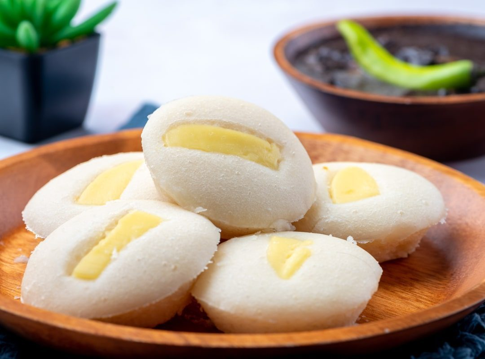
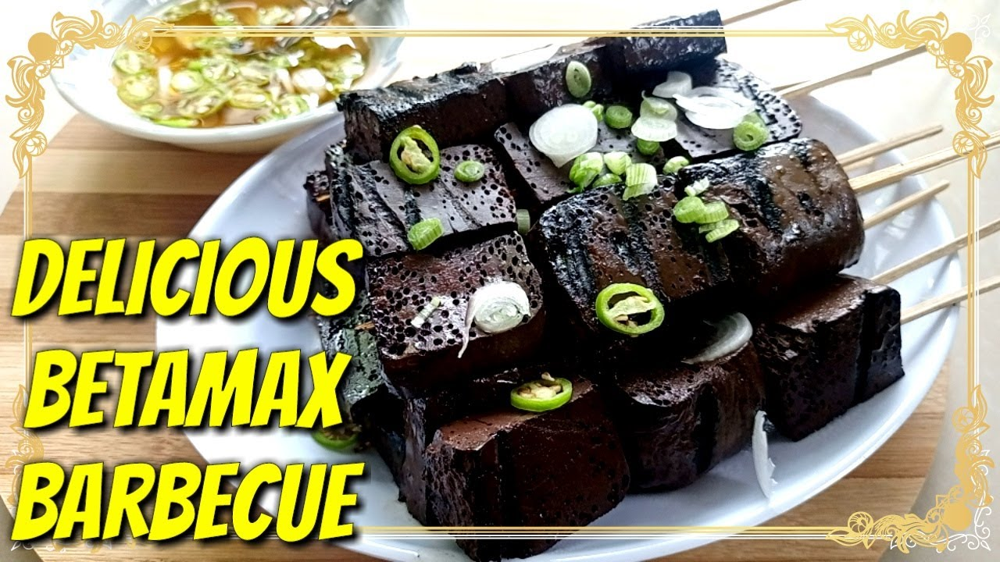
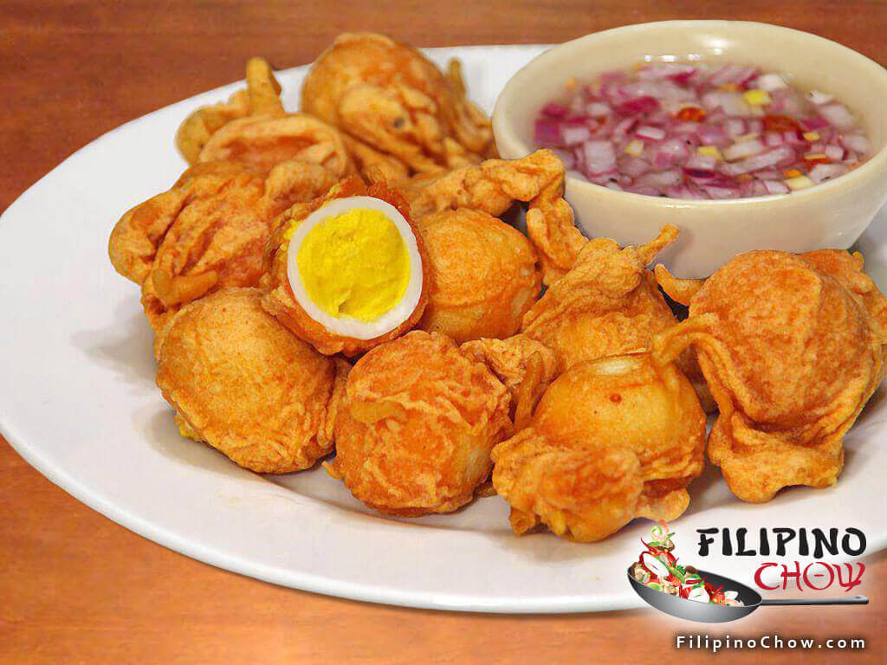

Chicken Afritada Chicken braised in savory tomato sauce with potatoes, carrots, and peppers. 55 min ★ 4.6
Sinigang na Hipon A sour tamarind shrimp soup loaded with vegetables. Light, savory, and deeply comforting. 35 min ★ 4.6
Rellenong Bangus Deboned milkfish stuffed with a savory mix of pork and vegetables, baked until golden and flavorful. 1 hr ★ 4.6
Daing na Bangus Butterflied milkfish marinated in vinegar, garlic, and pepper, then fried until crispy. Tangy and satisfying. 20 min + 1 hr marinating ★ 4.6
Ginataang Tilapia Tilapia simmered in creamy coconut milk with spices and vegetables. Mild, rich, and perfectly comforting. 40 min ★ 4.6
Pancit Canton Stir-fried wheat noodles with mixed vegetables, meat, and savory soy-oyster sauce. 20-25 min ★ 4.5
Pancit Palabok Rice noodles topped with shrimp sauce, pork, tinapa, eggs, and chicharrón. 35-45 min ★ 4.5
Lumpiang Shanghai Crunchy pork spring rolls filled with seasoned meat and vegetables. A party favorite. 30 min ★ 4.7
 Puto Soft steamed rice cakes with a light sweetness, often topped with cheese. Simple and fluffy. 25 min ★ 4.5
Bibingka Warm rice cake baked with coconut milk and topped with salted egg for a classic holiday flavor. 45 min ★ 4.6
Isaw (Bitukang Manok) Grilled chicken intestines marinated in savory spices. Smoky, chewy, and iconic street food. 1 hr including prep ★ 4.6
 Dugo (Betamax) Skewered, grilled blood cubes marinated in soy-vinegar. Bold flavor with a smoky finish. 30 min ★ 4.6
Pork Barbecue Sweet-savory marinated pork skewers grilled to smoky perfection with caramelized edges. 1 hr (including marinating) ★ 4.6
 Kwek-Kwek Crispy deep-fried quail eggs coated in bright orange batter, best paired with spiced vinegar. 20 min ★ 4.6